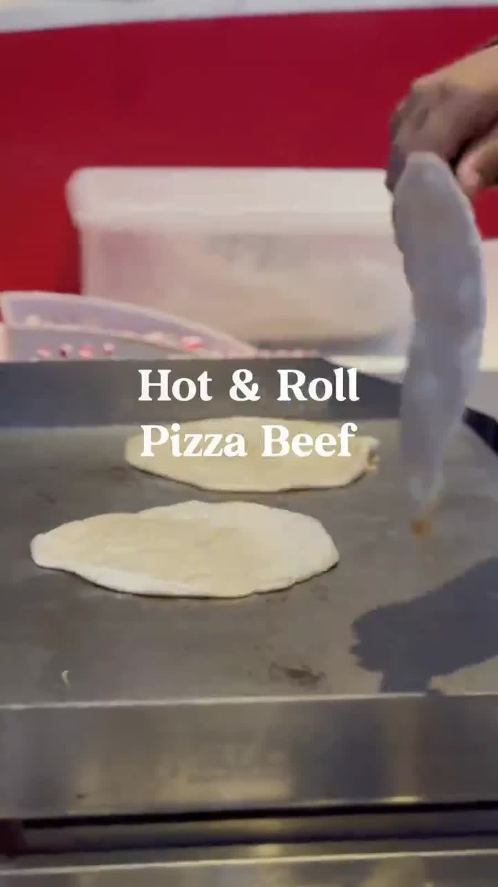

Scroll stopping POV and food videos for a Malaysian wrap favourite.

Hot and Roll is the wrap and paratha kiosk many Malaysians grew up on. For the January and February 2025 run I built two video engines: a POV series that turned everyday kiosk moments into relatable comedy, and a food prep series that made the crispy wrap look irresistible. The POV clips regularly pulled around 60,000 views each.
Quick, funny, painfully relatable POV skits about customers, friends, and the little dramas of ordering food, all in a warm local voice. Kerenah itu ini, hanya di Hot and Roll.
Close up food prep and menu videos that let the crispy wrap, paratha, and fillings do the talking, plus a festive Raya moment.